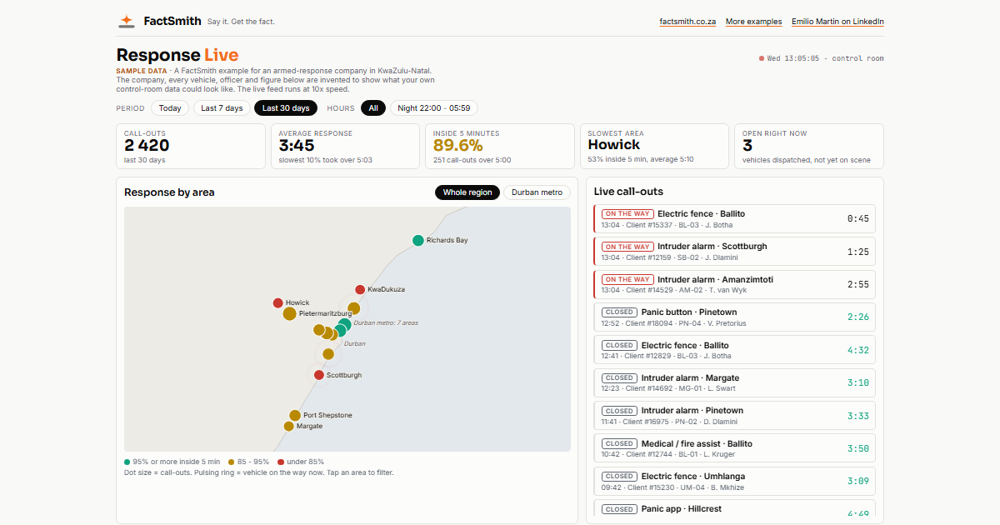
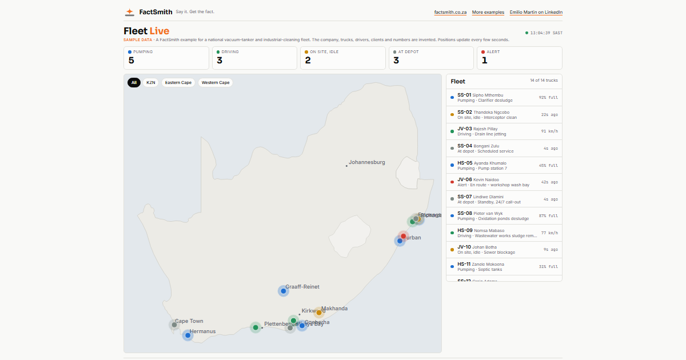

Two working examples. The companies and every number are invented, but each page is built the way FactSmith builds for a real client: operational feeds into one warehouse, one model, and answers people can act on.

Armed response. Response times by area against the 5-minute promise, live call-outs, worst hours, slow vehicles, and questions answered in plain English.

Vacuum tankers and industrial cleaning. Every truck on one map: pumping, driving, idle or in trouble, with tank level, pump hours and fuel.
Sample data only. factsmith.co.za · factsmith@outlook.com